Хорошо ли вы знаете linear-gradient? перевод
Хотите сделать симпатичный градиентный фон на своем сайте? background-image: linear-gradient(red, blue); готово! Да, это немного скучно. Поэтому, если вы хотите чего-то большего, рекомендую вам эту статью с советами по css и MDN страницу. Вы еще здесь? Тогда давайте рассмотрим некоторые моменты, как на самом деле работают линейные градиенты. Для начала, давайте вспомним синтаксис, который можно использовать в функции линейного градиента:
linear-gradient ([от <угла> | до <стороны-или-угла>]?,);
Функция принимает опциональный первый аргумент, который определяет угол градиента, и который можно выразить с помощью единицы измерения (градус, радиус, град, оборот) или в виде ключевого слова (стороны или угла.
После этого функция принимает список цветов.Поле градиента
У градиентного изображения нет размеров, оно бесконечно в отличие от других фоновых изображений. Видимые размеры ему придает поле градиента, т.е. область, в которой оно отображается.
Как правило, когда вы применяете фоновое изображение в виде линейного градиента к элементу DOM, этой областью является рамка границ элемента (которая является той самой областью, в которой отображается фоновый цвет).
При этом если вы используете еще и CSS-свойство background-size (размер фона) и устанавливаете его, скажем, на 200px * 200px, тогда поле градиента будет иметь этот размер и будет, по умолчанию, размещаться в левом верхнем углу DOM-элемента, если только вы также не установите background-position (положение фона).
Поэтому, читая следующие разделы, просто помните, что поле градиента не всегда расположено так же и имеет такие же размеры, как и DOM-элемент, к которому вы применяете этот градиент.
Линия градиента
В поле градиента линия, которая проходит через центр и вдоль которой распределяются цвета, называется линией градиента. Эту линию можно описать проще в ходе разъяснения угол градиента, поэтому об этом более подробно следующем разделе.
Угол градиента
Вполне очевидно, что угол линейного градиента используется для определения того, в каком направлении пойдет градиент. Но давайте рассмотрим этот аспект подробнее.
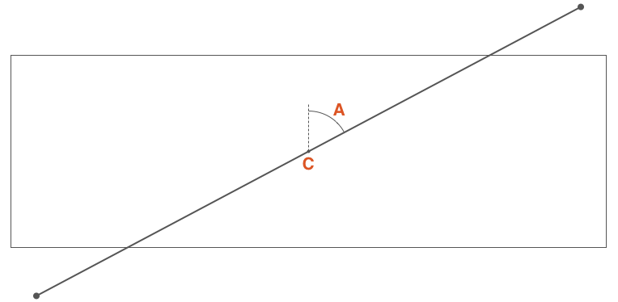Если С – это центральная точка поля градиента, тогда А – это угол между вертикальной линией, проходящей через С, и линией градиента, которая также проходит через С, и вдоль которой распределяются стоп-цвета градиента.
Этот угол можно определить двумя способами:- С помощью одного из ключевых слов: to top (вверх), to bottom (вниз), to left (влево), to right (вправо), to top right (вправо вверх), to top left (влево вверх), to bottom right (вправо вниз), to bottom left (влево вниз);
- Или путем определения угла с числом и единицей измерения, например 45deg (45 градусов), 1turn (1 оборот);
Если угол не указывается, то по умолчанию он направляется вниз (то есть это 180 градусов или 0,5 оборота):
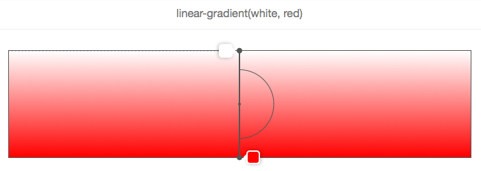На этом и на следующих изображениях поле градиента ограничено прямоугольником, а линия градиента – это жирная серая линия, которая проходит через центр, и вдоль которой отображаются цвета.
В вышеприведенном примере угол не указан, поэтому градиент от белого к красному двигается сверху вниз, что соответствует ключевому слову to bottom (вниз), как показано ниже:
И, как показано на 2 следующих изображениях, to top (вверх) соответствует углу в ноль градусов:

Еще один важный момент, который стоит учитывать, используя ключевые слова угла — что to top right (вправо вверх), например, (или любое другое ключевое слово угла) зависит от размеров поля градиента.
Логика заключается в том, что если бы вы хотели сделать градиент от красного к синему в направлении верхнего правого угла элемента, тогда такой элемент должен быть именно синим в верхнем правом углу, а фиолетовый цвет в середине градиента должен формироваться вокруг линии, которая проходит из верхнего левого в нижний правый угол. Вот как это выглядит на изображении:
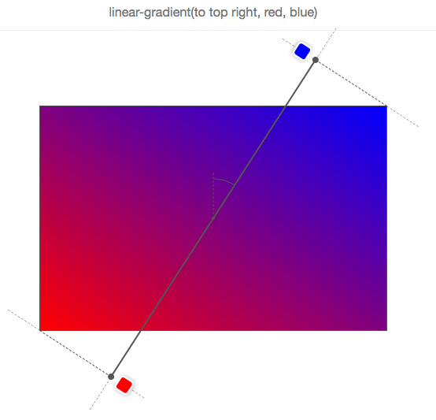Поэтому to top right (вправо вверх) не означает, что линия градиента проходит через правый верхний угол, и это даже не значит, что угол градиента равен 45 градусам!
Давайте посмотрим на то, как перемещается линия градиента при изменении угла, с помощью следующей анимации:

На этой анимации угол наклоняется от 0 до 360 градусов с шагом в 10 градусов. Низкое разрешение GIF даже позволяет лучше рассмотреть, как различные цвета отображаются в виде «линий», которые всегда перпендикулярны линии градиента.
Давайте вспомним, что мы знаем об углах градиента:
- Угол измеряется между линией градиента и линией, которая выходит из центра поля градиента и движется вверх.
- Поэтому 0 градусов означает вверх.
- Стандартное значение угла, если оно не указывается, это вниз, что равно 180 градусам.
- Ключевые слова угла зависят от размеров поля градиента.
Длина линии градиента
Прежде чем мы сможем увидеть, как распределяются цвета вдоль линии градиента, нам нужно объяснить один момент. Вы, возможно, заметили в предыдущей анимации, что цвета иногда располагаются за пределами поля градиента, что может с первого взгляда выглядеть немного странным, но это логично, если вы знаете причину.
Посмотрите на пример: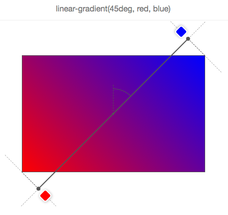
Нам нужен градиент от красного к синему с углом 45 градусов, и, ввиду соотношения сторон поля градиента, линия градиента не может проходить через правый верхний угол.
Но браузер хочет (то есть, спецификации заставляют его) сделать правый верхний угол чисто синим. Если бы мы сделали так, чтобы линия градиента начиналась и заканчивалась на краях поля, тогда бы синий цвет занял большую часть поля, а градиент бы так не расплывался.
Поэтому, чтобы это сделать, линия градиента иногда должна выходить за рамки поля градиента. При этом довольно легко узнать, где она начинается, и где заканчивается. Просто начертите линию, которая проходит через ближайший угол, и которая перпендикулярна линии градиента. Точка, где эта линия пересекает линию градиента, и есть местом начала/конца.
Фактически, если вы задает ширину поля градиента W, высоту H, и угол градиента, тогда длина линии градиента составляет:
abs(W * sin(A)) + abs(H * cos(A))
Цвета
Цвета представляют собой список, разделенный запятыми, в котором каждый элемент можно определить следующим образом:
<цвет> [<процентное соотношение> | <длина>]?
Поэтому необязательно указывать, где должны размещаться цвета на линии градиента.
Например: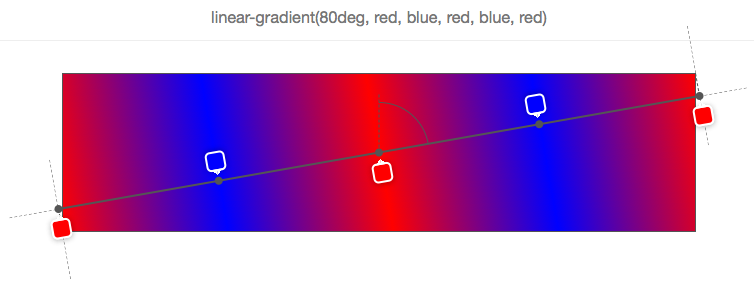
Ни один из цветов не имеет своего положения, поэтому браузер сам определил их позиции.
На самом простом примере только с 2 цветами, цвет 1 будет размещаться на 0% (в начале линии градиента), а цвет 2 – на 100% (в конце линии градиента).
Потом, если вы добавите третий цвет, цвет 1 у вас все равно останется на 0%, цвет 2 будет на 50%, а цвет 3 – на 100%, и так далее.
В вышеприведенном примере было задано 5 стоп-цветов, и браузер рассчитал их относительное положение как 0%, 25%, 50%, 75%, 100%. Причиной тому является равномерное распределение вдоль поля градиента.
Позицию цвета можно выразить либо с помощью процентного соотношения (по отношению к размеру линии градиента) или в виде длины CSS (где действует любая единица измерения CSS).
Вот пример: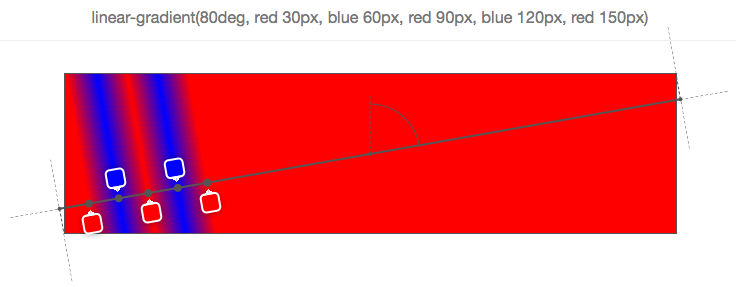
Как вы видите, каждый из 5 стоп-цветов имеет свое положение, заданное в пикселях. Эти положения рассчитываются от начала линии градиента.
Используя такие позиции, вы можете получить несколько интересных эффектов. Например, вы можете использовать градиент, чтобы не рисовать градиент как таковой, а оставить несколько цветов:

На изображении выше 7 цветов, и они установлены таким образом, чтобы следующий цвет начинался в точно той же позиции, что и последний, что означает, что браузеру не нужно заполнять пространство между двумя стоп-цветами градиентом.
Конечно, это все мило и забавно, но что произойдет, если вы смешаете позиционированные цвета с непозиционированными? Тогда вы заставите браузер работать больше и попросите его автоматически распределять цвета, для которых вы не указали позицию:
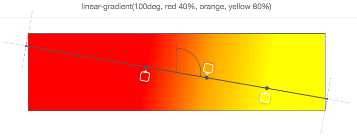В этом простом примере второй цвет (оранжевый) не имеет позиции, поэтому браузер сам определяет ее и находит подходящее место между ранее заданным и следующим цветом. Здесь это очень просто, так как непосредственные соседи второго цвета имеют свою позицию, но если позиции есть только у некоторых цветов, или если предыдущие или следующие цвета не имеют позиции, все усложняется.
Давайте рассмотрим несколько примеров: 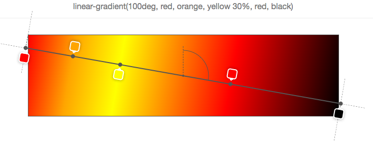На примере выше только третий цвет (желтый) позиционирован на 30%. Поэтому, чтобы лучше распределить все остальные, первый размещается на 0%, последний – на 100%, а остальные цвета распределяются в промежутке (так, что оранжевый заканчивается непосредственно между 0% и 30%, а красный – между 30% и 100%).
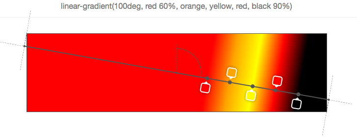На примере выше первый и последний цвета позиционированы, поэтому остальные равномерно распределяются между этими двумя.
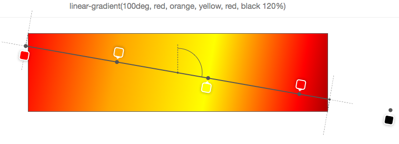Конечно, было бы слишком просто, если бы 0% и 100% были жесткими рамками, за которые нельзя выходить. Но как видно из предыдущего примера, последний цвет расположен на 120%, и поэтому все остальные цвета должны распределяться соответствующим образом относительно данной позиции (начальной точкой по умолчанию в этом случае остается 0%).
И если вы хотите заставить свой браузер работать еще больше, почему бы не указать порядок позиций?
На самом деле цвета должны иметь порядок, но ничто не запрещает вам этого не делать, и ничего ужасного не произойдет, если вы этого не сделаете. Ваш браузер просто все исправит, как показано ниже:
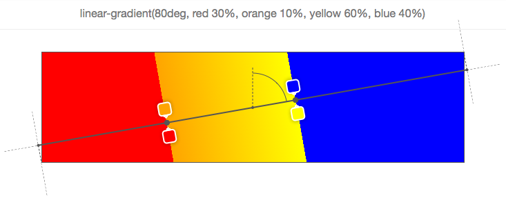Начнем с первого цвета (красного), расположенного на 30%. Дальше второй цвет расположен на 10%, что уже неправильно, так как, как сказано выше, цвета должны указываться по возрастанию позиции. Поэтому здесь браузер исправляет позицию второго цвета и устанавливает его в то же положение, что и у предыдущего цвета (30%). Далее идет третий цвет (желтый), расположенный на 60%, что правильно, но за ним следует четвертый (синий) на 40%. Опять же позиция корректируется и устанавливается на то же значение, что и предыдущего позиционированного цвета.
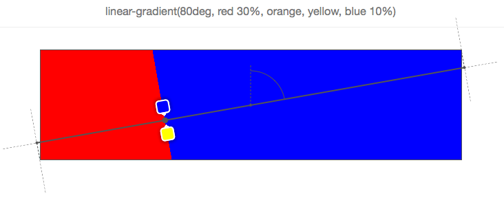В конечном итоге, как показано на примере выше, последний цвет (синий) позиционируется неправильно и браузер делает его позицию такой же, как и у предыдущего цвета, который в данном случае не является ни его непосредственным соседом (желтым), ни соседом цвета, который стоит перед ним (оранжевым), поэтому он должен вернуться к первом цвету (красному). Таким образом, все цвета между красным и синим установлены в положение 30% и поэтому невидимы.
Инструменты
Все скриншоты в этой статье взяты из простого инструмента, который сделан на codepen, и который позволяет вводить функцию линейного градиента и видеть поле градиента, линию градиента, угол, а также информацию о цветах поверх элемента.
В инструменте есть все виды багов и ограничений (см. комментарии в javascript), поэтому не ожидайте от него многого.